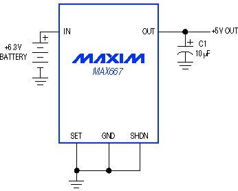
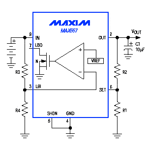
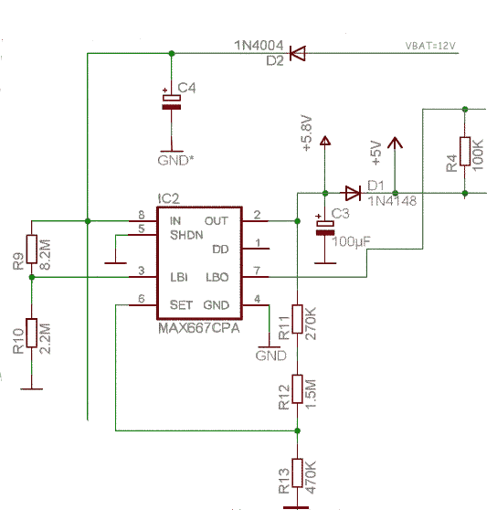

Régulateur de tension MAX667 (ou ADP667)
Réaliser une alimentation fixe de 5V ou ajustable, Low-Dropout, très faible consommation.[cite: 41]
I.1 Introduction
Vous cherchez un régulateur positif fixe (+5V) ou ajustable, très faible consommation, Low-Dropout et équipé d'un détecteur de batterie faible. Alors, oubliez les régulateurs 78XX et essayez le MAX667 de MAXIM (ou le ADP667 de Analog Device).[cite: 41]
Avec ses quelques dizaines de µA de consommation, le MAX667 est un régulateur rêvé pour vos montages équipés de piles ou d'accumulateurs. La preuve, le MAX667 du montage Bat_supervisor ne consomme que 80µA pour un courant de charge de 7mA.[cite: 41]
Typiquement la différence de tension entre l'entrée et la sortie peut être très faible (Low Dropout) soit 150mV (350mV Max.) pour un courant de charge de 200mA.[cite: 41]
I.2 Description des pattes
| PIN | NOM | FONCTION |
|---|---|---|
| 1 | DD | Sortie Dropout Detector - Collecteur ouvert d'un PNP - Change d'état quand le seuil Dropout est atteint[cite: 41] |
| 2 | OUT | Sortie positive régulée[cite: 41] |
| 3 | LBI | Entrée Low Battery Detector - Comparaison par rapport à une référence de 1.225V[cite: 41] |
| 4 | GND | Masse[cite: 41] |
| 5 | SHDN | Entrée Shutdown - connectée à la masse pour un fonctionnement normal.[cite: 41] |
| 6 | SET | Entrée d'ajustage de la tension (Masse = 5V, diviseur = autres tensions)[cite: 41] |
| 7 | LBO | Sortie Low Battery Output[cite: 41] |
| 8 | IN | Tension d'entrée non régulée[cite: 41] |
I.3 Exemple d'une régulation fixe +5V

Les pins SET, GND et SHDN sont à la masse, ce montage fonctionnera du premier coup si vous prenez soin d'ajouter entre la sortie régulée (OUT) et la masse un condensateur de 10µF.[cite: 41]
I.4 Exemple d'une régulation de tension ajustable

Calcul de R1 et R2
La valeur préconisée pour R1 est de 1MO. Fixons Vset = 1.22V :[cite: 41]
$$V_{out} = V_{set} \times \frac{R_1+R_2}{R_1}$$ $$R_2 = R_1 \times \left(\frac{V_{out}}{V_{set}} - 1\right)$$Détection tension de batterie faible (LBI)
La tension issue du diviseur de tension R3-R4 est appliquée à l'entrée LBI. L'équation suivante permet de calculer les valeurs en fonction de la tension de la batterie (Vbat) et du seuil (VLBI) :[cite: 41]
$$R_3 = R_4 \times \left(\frac{V_{bat}}{V_{LBI}} - 1\right)$$I.5 Exemple de réalisation pratique

Dans ce montage :[cite: 41]
$$V_{out} = V_{set} \times \frac{R_{13}+R_{12}+R_{11}}{R_{13}}$$Soit Vout = 5.81V.[cite: 41]
Calcul de la tension de seuil LBI (avec VD2 = chute d'une diode silicium, 0.6V) :[cite: 41]
$$V_{LBI} = \frac{(V_{bat} - V_{D2}) \times R_{10}}{R_{10} + R_9}$$La sortie LBO changera d'état pour une tension de batterie inférieure à :[cite: 41]
$$V_{bat} = \frac{V_{LBI} \times (R_{10} + R_9)}{R_{10}} + V_{D2}$$Avec VLBI = 1.225V, VD2 = 0.6V, R9 = 8.2MO, R10 = 8.2MO, on obtient VBAT = 6.39V.[cite: 41]